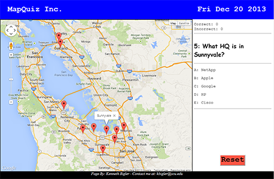

Computer Science and Engineering Senior at Santa Clara University
Location: Los Altos, California Interests: Computer Software Current Employment: NetApp
Volunteer at Second Harvest Food Bank
Education:
Santa Clara University, Santa Clara, CA
Bachelor of Science in Computer Science and Engineering with a Mathematics Minor, June 2015
Master of Science in Computer Engineering, June 2016
Dean’s List, September 2012 – Present
GPA: 3.711
Stanford University, Stanford, CA
High School Summer College, June-Aug. 2010
GPA: 3.812
Summary of Skills:
Designing, building, and overseeing production of large and small Internet and Intranet sites
Developing a schedule for web projects, creating web standards, prioritizing goals, documenting procedures
Gathering information to make useful websites and creating web art from scratch
Manage international team members, strong communication skills, team player, and detail-oriented
Develop web-based applications to enable various processes, as well as train users
Communicate status of projects with upper management and how to resolve roadblocks
Support HR Intranet using Joomla and WordPress; update code, graphics and perform web project management
Design and create new websites, migrate between CMS’s, as well as maintain and improve existing websites
Create/update graphics using Adobe CS, resolve technical issues, educate department content owners on their choices
Set up and manage permissions on SharePoint for HR group of 75 people
Human Resources Information Technology and Services Representative
August 2012 – September 2012 (2 months)
Prepared layout for Pre-Boarding Portal (new hires access company info and forms)
Analyzed best protection of emails and implemented Rights Management Services (RMS)
Created a presentation for RMS to deliver to upper management
Designed instructional presentations for new tools (EchoSign and RMS)
Developed a site map for the HR website
VengefulGames, LLC
Game Developer
August 2014 – Present (4 month)
Game engine development and optimization, UI enhancements, and improving overall game performance
Brainstorm with CEO and upper-level management about the direction of the company and future product ideas
Improve the look, feel, and overall experience of the game to make it easier to play and understand for users
Volunteer Experience
Second Harvest Food Bank
Second Harvest Food Bank Team Leader
September 2010 – Present (4 years)
Instruct and supervise between 10 and 40 volunteers regarding food sorting, packaging and distribution. Food is then distributed to smaller organizations that helps the homeless and disadvantaged
Mount Hermon’s Outdoor Science School
Science Camp Counselor
March 2010 & March 2011 (2 weeks)
Led a group of eight 6th-graders for a week-long science camp
Senior Year
Fall Quarter
Web Search & Info Retrieval
Software Engineering
Design Project I
Applied Engineering Communications I
Theology of Marriage
Winter Quarter
Object Oriented Analysis and Design Programming
Software Quality Assurance and Testing
Software Development Process Management
Formal Language Theory and Compiler Construction
Design Project II
Applied Engineering Communications II
Spring Quarter
Computer Architecture
Design Project III
Applied Engineering Communications III
Undecided Graduate Elective
Undecided Graduate Elective
Junior Year
Fall Quarter
Web Programming I
Operating Systems
Advanced Linear Algebra
Religion in America
Winter Quarter
Computer Networks
Mobile Application Development (Android)
Prin Des & Impl Prog Lang
Human Services
Spring Quarter
Intro: 3D Animation & Modeling
Theory of Algorithms
Digital Integrated Circuit Design
Combinatorics
Sophomore Year
Fall Quarter
Introduction to Logic Design
Global Music/Cultural Politics (Cultures and Ideas I)
Physics for Scientists and Engineers III
Ways of Understanding Religion
Winter Quarter
Global Music/Cultural Politics (Cultures and Ideas II)
Course: COEN 272 Teacher: Yi Fang Description: Basic and advanced techniques for organizing large-scale information on the Web. Search engine technologies. Big data analytics. Recommendation systems. Text/Web clustering and classification. Text mining. Prerequisites: AMTH 108 or AMTH 210, MATH 53 or AMTH 246, and COEN 179 or 279. (4 units)
Software Ethics
Course: COEN 288 Teacher: Dorcas E. Evans Description: Broad coverage of ethical issues related to software development. Formal inquiry into normative reasoning in a professional context. Application of ethical theories to workplace issues, viz., cost-benefit analysis, externalities, individual and corporate responsibility, quality and authorship of product. Case studies and in-class topics of debate include computer privacy, encryption, intellectual property, software patents and copyrights, hackers and break-ins, freedom of speech and the Internet, error-free code, and liability. (2 units)
Software Engineering
Course: COEN 174 & 174L Teacher: Darren C. Atkinson Description: Software development life cycle. Project teams, documentation, and group dynamics. Software cost estimation. Requirements engineering and design. Data modeling, object modeling, and object-oriented analysis. Object-oriented programming and design. Software testing and quality assurance. Software maintenance. Prerequisites: A grade of C- or better in COEN 12 or CSCI 61. Corequisite: COEN 174L. (5 units)
Design Project I
Course: COEN 194 Teacher: Aikaterini Potika Description: Specification of an engineering project, selected with the mutual agreement of the student and the project advisor. Complete initial design with sufficient detail to estimate the effectiveness of the project. Initial draft of the project report. (2 units)
Applied Engineering Communications I
Course: ENGL 181 Teacher: Theresa C. Conefrey Description: The first of a required three-course sequence in advanced writing for senior engineering majors. Prerequisites: ENGL 1A and 2A. (2 units)
Theology of Marriage
Course: TESP 124 Teacher: Sally M. Vance-Trembath Description: An examination of human relationships, intimacy, sexuality, and marriage through the social sciences, philosophy, and theology, and exploration of human love in the unconditional commitment to spouse as the expression of divine love. Reserved for Senior level students. (5 units)
Winter Quarter
Object Oriented Analysis and Design Programming
Course: COEN 275 Teacher: Rani Mikkilineni Description: Four important aspects of Object-Oriented Application development are covered: fundamental concepts of the OO paradigm, building analysis and design models using UML, implementation using Java and testing object-oriented systems. (4 units)
Software Quality Assurance and Testing
Course: COEN 286 Teacher: Alka S. Shah-Jarvis Description: Social factors. Configuration management. Software complexity measures. Functional and structuring testing. Test coverage. Mutation testing. Trend analysis. Software reliability. Estimating software quality. Testing OOPs. confidence in the software. Software quality control and process analysis. Managerial aspects. (2 units)
Software Development Process Management
Course: COEN 287 Teacher: Zoltan I. Kurczveil Description: Management of the software development process at both the project and organization levels. Interrelationship of the individual steps of the development process. Management techniques for costing, scheduling, tracking, and adjustment. Prerequisite: COEN 285. (2 units)
Formal Language Theory and Compiler Construction
Course: COEN 175 & 175L Teacher: Darren C. Atkinson Description: Introduction to formal language concepts: regular expressions and context-free grammars. Compiler organization and construction. Lexical analysis and implementation of scanners. Top-down and bottom-up parsing and implementation of top-down parsers. An overview of symbol table arrangement, run-time memory allocation, intermediate forms, optimization, and code generation. Prerequisite: A grade of C- or better in COEN 20 and in COEN 70. Co-requisite: COEN 175L. (5 units)
Design Project II
Course: COEN 195 Teacher: Aikaterini Potika Description: Continued design and construction of the project, system, or device. Initial draft of project report. Prerequisite: COEN 194. (2 units)
Applied Engineering Communications II
Course: ENGL 182A Teacher: Theresa C. Conefrey Description: The second of a required three-course sequence in advanced writing for senior engineering majors. Prerequisite: ENGL 181. (1 unit)
Spring Quarter
Computer Architecture
Course: 122 & 122L Teacher: ??? Description: Overview of computer systems. Instruction set architecture. Computer arithmetic. CPU data path design. CPU control design. Pipelining. Data/control hazards. Memory hierarchies and management. Introduction of multiprocessor systems. Hardware description languages. Laboratory project consists of a design of a CPU. Prerequisites: A grade of C- or better in either COEN 20 or ELEN 33 and in either COEN 21 or ELEN 21. Co-requisite: COEN 122L. (5 units)
Design Project III
Course: COEN 196 Teacher: Aikaterini Potika Description: Continued design and construction of the project, system, or device. Formal public presentation of results. Final report. Prerequisite: COEN 195. (2 units)
Applied Engineering Communications III
Course: ENGL 182B Teacher: ??? Description: The third of a required three-course sequence in advanced writing for senior engineering majors. Prerequisites: ENGL 181. Enrollment by permission of instructor. Fulfills the Advanced Writing req. for the senior engineering major. ENGL 182B is taught only in spring. (1 unit)
Undecided Graduate Elective
Course: COEN 2XX Teacher: Description: (4 units)
Undecided Graduate Elective
Course: COEN 2XX Teacher: Description: (4 units)
Junior Year
Fall Quarter
Web Programming I
Course: COEN 161 & 161L Teacher: Rani Mikkilineni Description: Fundamentals of World Wide Web (WWW) and the technologies that are required to develop web-based applications. Topics cover HTML5, CSS, JavaScript, PHP, MYSQL and XML. Prerequisite: A grade of C- or better in either COEN 12 or CSCI 61. Co-requisite: COEN 161L. (5 units)
Operating Systems
Course: COEN 177 & 177L Teacher: Ahmed Amer Description: Introduction to computer operating systems. Operating system concepts, computer organization model, storage hierarchy, operating system organization, processes management, interprocess communication and synchronization, memory management and virtual memory, I/O subsystems, and file systems. Design, implementation, and performance issues. Prerequisites: A grade of C- or better in either COEN 12 or CSCI 61 and in COEN 20. Co-requisite: COEN 177L. (5 units)
Advanced Linear Algebra
Course: MATH 103 Teacher: Jose Barria Description: Abstract vector spaces, dimensionality, linear transformations, isomorphisms, matrix algebra, Eigenspaces and diagonalization, Cayley-Hamilton Theorem, canonical forms, unitary and Hermitian operators, applications. Prerequisite: MATH 53. (4 units)
Religion in America
Course: RSOC 51 Teacher: James Bennett Description: Traces the development, character, and impact of religion in America from the precolonial era to the present. Course readings and discussions will center on the relationship between religion and the development of American culture. Includes Native American traditions; slavery and religion; the rise of revivalism; gender; religion and war; immigration; and modern pluralism, etc. Prerequisite: Introductory level course (SCTR 1-19, TESP 1-19, or RSOC 1-19). (4 units)
Winter Quarter
Computer Networks
Course: COEN 146 & 146L Teacher: Simon Gar Man Koo Description: Data Communication: circuit and packet switching, latency and bandwidth, throughput/delay analysis. Application Layer: client/server model, socket programming, Web, e-mail, FTP. Transport Layer: TCP and UDP, flow control, congestion control, sliding window techniques. Network Layer: IP and routing. Data Link Layer: shared channels, media access control protocols, error detection and correction. Mobile computing and wireless networks. Network security. Laboratory consists of projects on software development of network protocols and applications. Prerequisite: COEN 12 with a grade of C- or better. Recommended co-requisite: AMTH 108. Co-requisite: 146L. (5 units)
Mobile Application Development (Android)
Course: COEN 168 Teacher: Alec M. Go Description: Design and implementation of applications running on a mobile platform such as smart phones and tablets. Programming languages and development tools for mobile SDKs. Writing code for peripherals - GPS, accelerometer, touchscreen. Optimizing user interface for a small screen. Effective memory management on a constrained device. Embedded graphics. Persistent data storage. Prerequisite: A grade of C- or better in COEN 20 or COEN 70 or equivalent. Co-located with COEN 268. (4 units)
Prin Des & Impl Prog Lang
Course: COEN 171 Teacher: Darren C. Atkinson Description: High-level programming-language concepts and constructs. Costs of use and implementation of the constructs. Issues and trade-offs in the design and implementation of programming languages. Critical look at several modern high-level programming languages. Prerequisites: A grade of C- or better in either COEN 12 or CSCI 61. (4 units)
Human Services
Course: SOCI 165 Teacher: Sheila M. Yuter Description: Introduction to the field of human services. Topics include the connections between societal understanding of social problems, programs, and policies; work and management issues in public and non-profit human service agencies; human services in a multicultural context; opportunities to learn through community-based learning placements servicing marginalized communities and from human service professionals. Note: This course requires participation in community-based learning (CBL) experiences off campus. (5 units)
Spring Quarter
Intro: 3D Animation & Modeling
Course: COEN 165 Teacher: Max Sims Description: Mathematical and physical principles of motion of rigid bodies, including movement, acceleration, inertia and collision. Modeling of rigid body dynamics for three-dimensional graphic simulation; controlling the motion of rigid bodies in robotic applications. Also listed as ARTS 173. Prerequisites: MATH 14; COEN 12 or CSCI 61. (4 units)
Theory of Algorithms
Course: COEN 179 Teacher: Byron L Walden Description: Introduction to techniques of design and analysis of algorithms: asymptotic notations and running times of recursive algorithms; design strategies: brute-force, divide and conquer, decrease and conquer, transform and conquer, dynamic programming, greedy technique. Intractability: P and NP, approximation algorithms. Also listed as CSCI 163. Prerequisites: A grade of C- or better in either COEN 12 or CSCI 61 and in either COEN 19 or MATH 51. (5 units)
Digital Integrated Circuit Design
Course: ELEN 153 & 153L Teacher: San Lwin Lin Description: Introduction to VLSI design and methodology. Study of basic principles of operation, terminal characteristics, and equivalent circuit models for diodes and transistors. Analysis of CMOS integrated circuits. Circuit modeling and performance evaluation supported by simulation (SPICE). Ratioed, switch, and dynamic logic families; combinational and sequential circuits. Fully-custom and semi-custom design. Physical design: placement and routing. use of state-of-the-art CAD tools. Prerequisites: ELEN/COEN 21 and ELEN 50 with a grade of C- or better. Co-requisite: ELEN 153L. (5 units)
Combinatorics
Course: MATH 176 Teacher: Robert A Bekes Description: Permutations and combinations, generating functions, recursion relations, inclusion-exclusion, Pólya counting theorem, and a selection of topics from combinatorial geometry, graph enumeration, and algebraic combinatorics. (5 units)
Fun Activities I Enjoy
Current Clubs:
Association for Computing Machinery
- Vice President 2012, 2013
- September 2011 - Present
Tau Beta Pi Engineering Honors Society
- November 2014 - Present
Intramural Soccer and Volleyball
- January 2012 - Present
Leavey Golf Club
- September 2012 - Present
Other Activities:
- Piano
- Cars
- Swimming
- Biking
- Hiking
- International Travel
- Video Games (DOTA 2)
Previous Clubs:
Coders Club
- April 2012 - June 2013
Solar Decathlon 2013 Competition
- Control Systems Team
- March 2012 - June 2013
Mexico Service Trip
- 2008: built a home from the foundation up to help a family that could not afford it
- 2009: general improvements on an orphanage including beginning construction work on a new bathroom
This is my final project, done with Zachery Wilson This is my first project, all "About Me"

This is my second project with the goal to create a Map Quiz